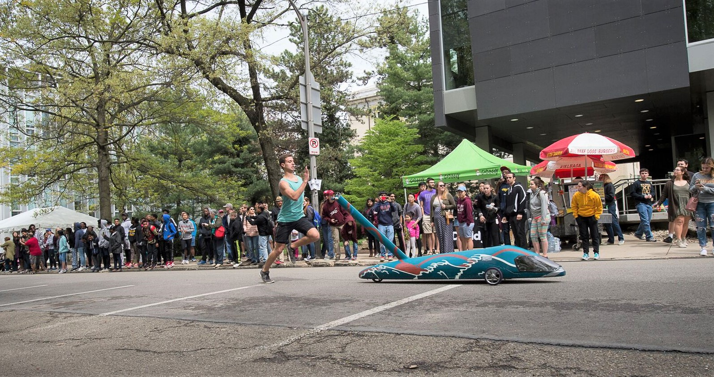
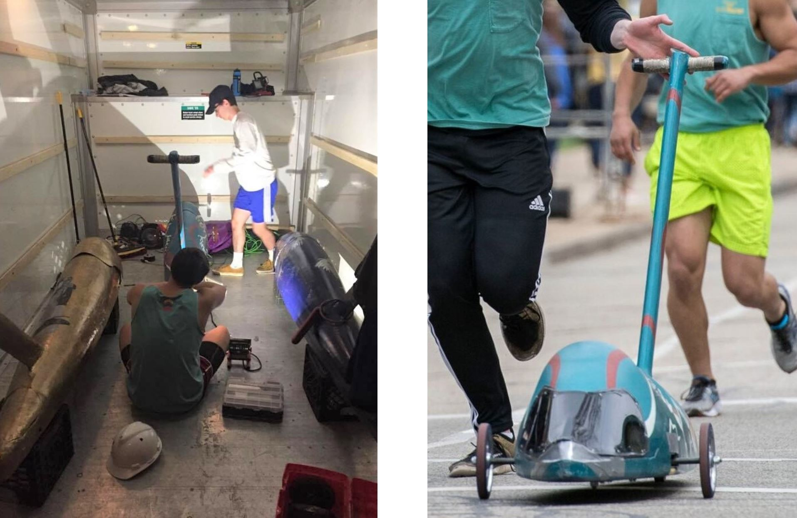

Sweepstakes, or "Buggy," is a Carnegie Mellon tradition where students design, build, and race 7 foot long torpedo cars. Preserving the integrity of the original buggy races which took place in the 1920s using then-brand-new shopping carts, there is a person riding superman-style inside the vehicle, controlling it as it is pushed uphill and released down free-rolls at speeds up to 40 mph!
The grand goal of the competition is to complete the course in the least possible time. While every team has their trade secrets for design, all buggies are comprised of a carbon fiber body, extruded "push bar," braking and steering system, and internal harnessing apparatus. Through design, construction, maintenance, and improvement, teams attempt to engineer a buggy which gives the driver and pushers the best chance of winning.

I have been invovled with molding, carbon fiber layups, and body surfacing, all requiring extremely "down and dirty" fabrication tools and techniques. Similarly, I have machined custom parts for the steering and safety systems inside of the buggy. As issues have arose during regular dry runs and testing, I've created resourceful and hacky fixes on the spot.
As the buggy moves throughout the course, there are transitional points where the person pushing the vehichle passes it to the person in waiting, similar to a relay race. On the buggy is an extruded bar with handles, used by the pushers to apply force and grip when necessary. I revamped the gripping inteface with a more organic base form, overlayed with tacky tennis racquet grip tape which can be sized to the pusher's hands.
The competition culminates on raceday, where the teams race in heats! Below is a video from one of our team's past heats.